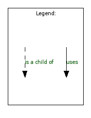
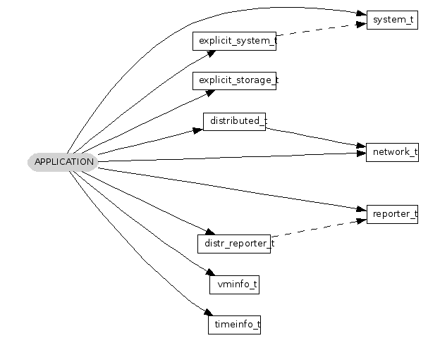
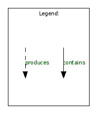
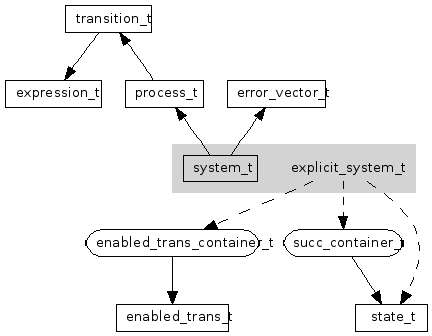

This is a reference manual of DiVinE = Distributed Verification Environment.
DiVinE is an open-source library aimed at an easy implementation of distributed verification algorithms. The big contribution of DiVinE project is its own modularity. Well defined interfaces of separate units allows to the developer to use any of "boxes," that he needs for his application. Furthermore the abstract interface of system allows to use
DiVinE is not a model checker! But there is a support for a LTL model checking algorithms:
Nevertheless DiVinE itself can't do LTL modelchecking at all. You have to write your own program that uses DiVinE library or use any program, that is based on DiVinE library, but is not the part of DiVinE Library. Currently there are 8 model checking algorithms based of the DiVinE Library. This collection of tools forms so called DiVinE ToolSet.
| 
| 
Structure of the application based on DiVinE Library |
| 
| 
Structure of the explcit system and relations with other classes used in the library |
The main parts of this project:
For details see Related Pages and the Compound List.
Another parts of this library:
 Reference Manual for Library, 2006 developed in ParaDiSe laboratory, Faculty of Informatics, Masaryk University
Reference Manual for Library, 2006 developed in ParaDiSe laboratory, Faculty of Informatics, Masaryk University